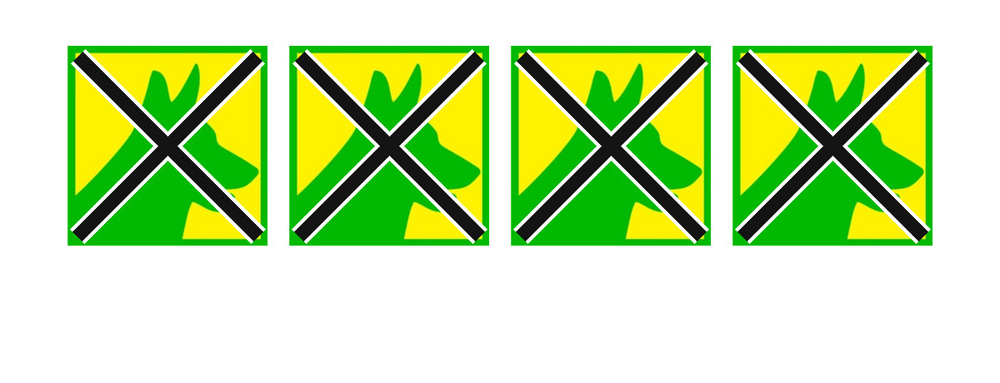

Así se marca correctamente la cédula en las Elecciones Regionales y Municipales 2026 (ERM 2026), según las reglas oficiales de la ONPE: las 4 secciones de tu cédula, la marca válida y los errores que anulan tu voto.
El domingo 4 de octubre de 2026, de 7:00 a.m. a 5:00 p.m., los electores de Piura recibirán una cédula con 4 secciones: la elección regional (Gobernador y Vicegobernador Regional, y Consejeros Regionales) y la elección municipal (Alcalde y regidores Provinciales, y Alcalde y regidores Distritales). Cada sección se marca por separado.
Marca el símbolo de PROGRESEMOS en las 4 secciones de tu cédula: Región, Consejero, Provincia y Distrito, colocando una cruz o un aspa dentro de cada recuadro.

Fuente: reglas de marcado de la ONPE para las Elecciones Regionales y Municipales 2026, según lo publicado por ONPE y medios verificados a setiembre de 2026.
Anulan tu voto en una sección: marcar dos o más organizaciones políticas dentro de la misma elección, usar un signo distinto a la cruz o el aspa (círculos, vistos, corazones, dibujos), o escribir tu número de DNI, frases o mensajes en la cédula. Que una parte de la marca sobresalga ligeramente del recuadro no anula el voto por sí solo, siempre que se pueda identificar con claridad la opción elegida.
Sí. Elegir una organización política para la elección regional y otra distinta para la elección municipal (el llamado voto cruzado) es válido, siempre que en cada sección marques correctamente una sola opción. Esto es distinto a marcar dos organizaciones dentro de una misma elección, lo cual sí anula esa sección.
Puedes consultar tu local de votación en el portal oficial de la ONPE, y revisar la guía completa de candidatos a la Alcaldía Provincial y al Gobierno Regional de Piura en los enlaces de abajo.
Esta guía es un servicio informativo para el elector piurano, basado en las reglas oficiales de la ONPE para las ERM 2026.
Escríbenos y te contamos cómo sumarte al equipo de PROGRESEMOS en tu distrito.
Escríbenos por WhatsApp